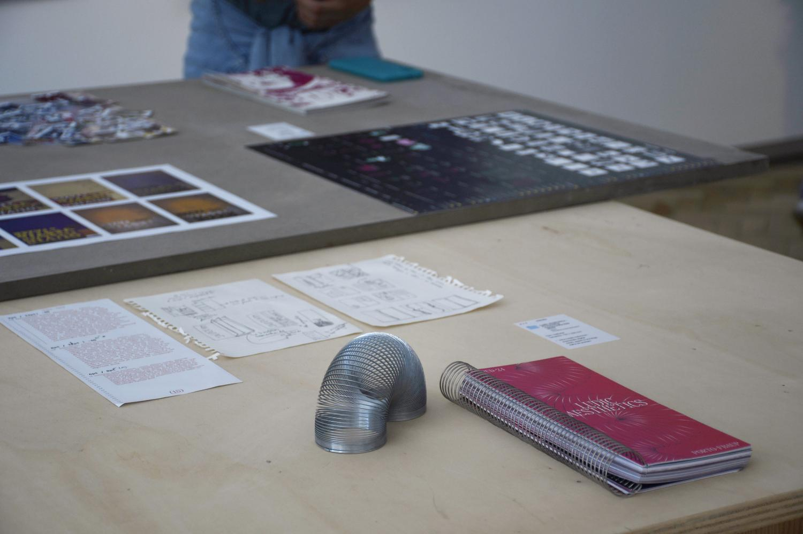
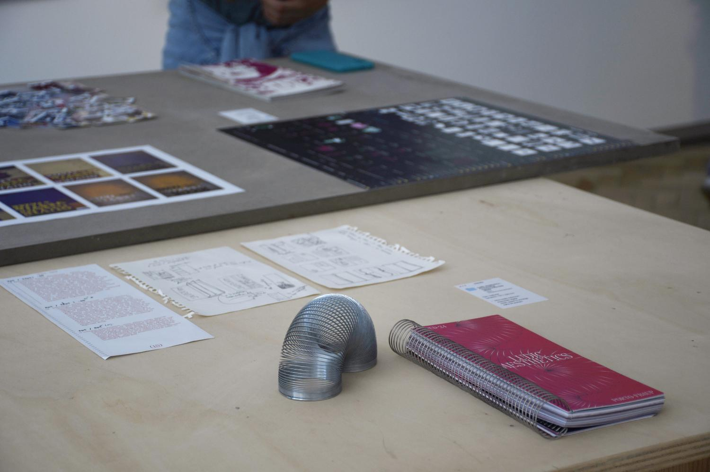

This project was developed for the 2024 Finalists Exhibition for the Communication Design Degree at FBAUP. The exhibition celebrated the end of a cycle and its “archiving”. Having “the process” as the main theme we wanted to highlight a part of the work that is sometimes overlooked, but which is often the most important, as it reveals the true essence of the project.
This year's distinguishing feature is the inclusion of the digital environment. These elements were chosen because this class was the first to enter the design world during the Covid-19 pandemic, and their first contact with university life was through a screen.


 
